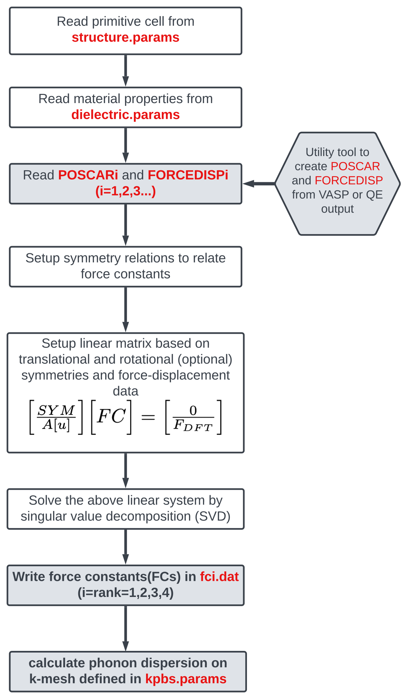

6. Running FOCEX
6.1. Overview
FOCEX (FOrce Constant EXtraction) takes a set of force–displacement data computed in one or several supercells — typically by a DFT code such as VASP or Quantum Espresso — and extracts from it the harmonic and anharmonic force constants (FCs) of the crystal, defined as the derivatives of the potential energy with respect to atomic displacements (see Theory).
The extraction proceeds in three stages:
Symmetry analysis. From the primitive cell described in
structure.params, FOCEX finds the space-group operations of the crystal, builds the neighbor shells around each atom of the primitive cell, and determines which FCs of each requested rank are irreducible (independent). All remaining FCs are expressed as linear combinations of these.Linear fit by SVD. Each snapshot in
FORCEDISPicontributes \(3 N_{sc}\) linear equations relating the DFT forces to the unknown irreducible FCs. Rows expressing translational (ASR), rotational and Huang invariance are added to this system, which is then solved in the least-squares sense by singular value decomposition.Post-processing. From the fitted FCs, FOCEX computes the phonon band structure, group velocities, density of states, mode Gruneisen parameters, elastic and compliance tensors, sound speeds, Debye temperature, and quasi-harmonic thermodynamic properties (free energy, heat capacity, entropy, thermal expansion) over a temperature range.
The FCs written by FOCEX are also the input of the other ALATDYN codes
(THERMACOND, SCOP8, ANFOMOD).
Note
Ranks up to 8 can be fitted, but only ranks 1–4 are written to fcN.dat
files. In practice ranks 2 (harmonic), 3 (cubic) and 4 (quartic) are the
useful ones.
6.2. Workflow
{kind=link}

In words, a complete calculation consists of the following steps. Steps 1–2 are
done outside FOCEX and produce the two “data” files POSCAR1 and
FORCEDISP1; steps 3–4 are the FOCEX run itself.
Generate snapshots. Use
sc_snaps.x(Running SC-SNAPS) to build a supercell and a set of snapshots in which all atoms are displaced according to a canonical (thermal) distribution at a chosen temperature.POSCAR1is the undisplaced one,poscar_000.Run the DFT code on each snapshot to obtain the forces on every atom, and collect the results into
FORCEDISP1(positions + forces + energy for every snapshot) withread_outcar.x/read_qe.xand one of the four helper scripts.Prepare the five parameter files
structure.params,dielectric.params,latdyn.params,kpbs.paramsanddefault.params.Run FOCEX in that directory. It writes the force constants, the phonon and thermodynamic properties, and a detailed log file.
Steps 1 and 2 are covered in Preparing the DFT data below; the parameter files in Input files.
If you want to use more than one supercell shape (recommended when you fit
cubic and quartic terms), repeat steps 1–2 for each shape and name the results
POSCAR1/FORCEDISP1, POSCAR2/FORCEDISP2, …
6.3. Quick start: the Ge example
A complete, ready-to-run example is provided in FOCEX/example/Ge. It uses a
216-atom supercell of germanium (\(3\times3\times3\) of the 8-atom
conventional cubic cell, \(a = 5.7022565\) Å) and 36 snapshots.
# after compiling (see the Installation chapter)
mkdir -p ~/runs/Ge && cd ~/runs/Ge
cp <path-to-repo>/FOCEX/example/Ge/{structure.params,dielectric.params,latdyn.params,kpbs.params,default.params,POSCAR1,FORCEDISP1} .
<path-to-your-binary> # e.g. ~/BIN/v16
On a single modern core the run takes a few minutes. It should end with
Program FOCEX ended at ...
and produce, among others, fc2.dat, fc2_irr.dat, fc3.dat,
fc3_irr.dat, bs_freq.dat, ibz_dos.dat, mech.dat,
thermo_QHA.dat and a log file whose name encodes the run settings (see
The log file name).
The reference results for this example are:
number of configurations (snapshots) 36
independent (irreducible) FC2 / FC3 78 / 95 (173 in total)
translational / rotational / Huang 14 / 84 / 15 constraints
fit quality || F_dft - F_fit || / || F_dft || 0.036 %
C11, C12, C44 (GPa) 121.1, 68.0, 47.4
Bulk modulus (Hill, GPa) 85.7
Debye temperature (K) 313.6
Warning
The files shipped next to the example inputs (fc2.dat, log*.dat,
svd-all.dat, …) were produced by an older version of the code; their
numbers and, for the FC files, their column layout differ slightly from what
the current version writes. Trust a fresh run rather than the stored output.
6.4. Preparing the DFT data
Everything in this section happens before FOCEX runs, and it has only one
purpose: to produce the two data files POSCAR1 (the undisplaced supercell)
and FORCEDISP1 (positions, forces and energy for every snapshot).
For the common case — VASP, on one machine — the whole preparation is five commands:
export PATH=$PATH:~/ALADYN/bin # so the utility programs are found
sc_snaps.x # 1. snapshots: reads cell.inp, supercell.inp, snaps.inp
sed '6d' poscar_000 > POSCAR1 # the undisplaced supercell, in VASP-4 layout
rm -f FORCEDISP1 # 2. DFT runs + collection
./runall.sh # edit the VASP command inside it first
What remains is to write the five *.params files (Input files) and
run FOCEX in the same directory. The two steps are described one at a time
below.
Step 1 — generate the snapshots
sc_snaps.x builds the supercell from the primitive cell and writes a set of
POSCAR-format snapshots in which all atoms are displaced simultaneously,
sampled from a classical canonical distribution at a chosen temperature.
Displacing all atoms at once, rather than one atom at a time, makes far better
use of each expensive DFT run. It reads three small files:
File |
What it sets |
|---|---|
|
The primitive and conventional cell, the elements, their masses and charges, and the atomic coordinates. |
|
A 3×3 integer matrix whose rows are the supercell translation vectors. |
|
Average phonon frequency (cm-1), sampling temperature (K), and the number of snapshots. |
and writes poscar_000 — the undisplaced supercell — plus one
poscar_001, poscar_002, … per snapshot, together with
snapshots.xyz, log.dat, freqs.dat and modes.dat for inspection.
Each poscar_0nn is a Cartesian VASP POSCAR whose last three columns are the
sampled velocities; VASP ignores them.
Important
The three input files, the sampling itself and the graphical interface are
documented in full in Running SC-SNAPS — start there. SC-SNAPS now lives in
its own repository and its input
format differs from the older copy bundled in FOCEX/utility: line 3 of
cell.inp takes two values (scale factor and convcoord) and line 6
takes masses and charges. Prefer the standalone version.
POSCAR1 comes straight out of this step — it is poscar_000 with the
element-name line deleted, because FOCEX expects the older VASP-4 layout in
which the atom counts follow the third lattice vector directly
(see Format of POSCARi):
sed '6d' poscar_000 > POSCAR1
The poscar_0nn snapshots themselves go to the DFT code unchanged.
Tip
How many snapshots do you need? The fit needs at least as many force
components (\(3 N_{sc}\) per snapshot) as there are independent FCs, and
comfortably more for a stable least-squares solution. The Ge example uses
36 snapshots × 648 force components = 23 328 equations for 173 unknowns.
Start with 10–20 snapshots and add more if the singular values reported in
svd-all.dat become small or the fit error is large.
Step 2 — run the DFT code and collect the forces
Run one single-point SCF calculation per snapshot — no relaxation. Accurate forces matter: use a well-converged k-mesh and plane-wave cutoff and tight electronic convergence, because the force constants are obtained by differentiating these forces.
Two converters turn a DFT output into the block format FOCEX reads. Both take
no command-line arguments and both write a file called pos-forc.dat in the
current directory, in format A (positions in Å, forces
in eV/Å), converting units as needed:
Converter |
Reads |
|---|---|
|
A VASP file named exactly |
|
A Quantum Espresso (PWSCF) output whose filename it reads from
standard input: |
FORCEDISP1 is then nothing more than every snapshot’s pos-forc.dat,
concatenated. Four scripts in FOCEX/utility do the looping for you — pick
the one that matches your situation:
Script |
Use it when |
|---|---|
|
You run VASP yourself, serially, on one machine. It loops over
|
|
You are on a Slurm cluster. This one covers steps 1 and 2 together:
it runs |
|
The DFT runs are already done and the outputs sit in one directory as
|
|
The DFT runs are already done and each output is an |
All four invoke read_outcar.x by name, so the DESTDIR you installed the
utilities into (~/ALADYN/bin by default) must be on your PATH.
Note
There is no ready-made script for Quantum Espresso. Despite its usage
message, process_dft.sh only ever searches for OUTCAR and only calls
read_outcar.x. For QE, loop yourself:
rm -f FORCEDISP1
for d in snap_*/ ; do
( cd "$d" && echo pw.out | read_qe.x )
cat "$d"/pos-forc.dat >> FORCEDISP1
done
Warning
Four things that go wrong here
Use a single-point calculation.
read_outcar.xwrites one block for every ionic step it finds in theOUTCAR. Leave a relaxation switched on (NSW > 0) and a single run silently becomes many “snapshots”, all referred to the wrong equilibrium positions. SetIBRION = -1,NSW = 0.Re-running appends. Only
xtract.shremovesFORCEDISP1before it starts;runall.sh,process_dft.shand the Slurm collection job all append to whatever is already there, so a second attempt silently doubles the file. Runrm -f FORCEDISP1before you restart. (Conversely,xtract.shprints a harmlessrm: FORCEDISP1: No such file or directoryon a fresh directory.)The converters use fixed filenames.
read_outcar.xreads./OUTCARand writes./pos-forc.dat, and neither name can be changed on the command line. That is why the scripts copy the file orcdinto its directory instead of passing a path.Keep the atom order. Within each block the atoms must appear in the same order as in
POSCAR1. They do if theposcar_0nnfiles produced bysc_snaps.xwere used throughout and the DFT code was not allowed to re-sort them.
Note
The scripts include poscar_000, the undisplaced cell, in both the DFT
runs and FORCEDISP1. Its block carries zero displacements and near-zero
forces, so it contributes nothing to the fit — but it is a free check: if
those residual forces are not small, the structure you built the supercell
from was not properly relaxed.
The exact layout of the two files these steps produce is given below, for reference or for when you generate them some other way.
Format of POSCARi
This line is a comment and ignored <- line 1: free-form comment
1.000000 <- scale factor (see note)
17.1067694871620333 0.0000000000 0.0000000000 <- supercell vector 1
0.0000000000 17.1067694871620333 0.0000000000 <- supercell vector 2
0.0000000000 0.0000000000 17.1067694871620333 <- supercell vector 3
216 <- number of atoms of each type (one integer per type)
Direct <- "Direct"/"D" or "Cartesian"/"C"
0.0000000000 0.0000000000 0.0000000000
0.0000000000 0.0000000000 0.3333333333
... <- one line per atom
Notes:
There is no element-name line: line 6 must contain
natom_typeintegers, in the same order as the types declared instructure.params.The scale factor multiplies the three lattice vectors (and Cartesian atomic positions). A negative value is interpreted, as in VASP, as minus the volume of the cell.
A
Selective dynamicsline before the coordinate flag is tolerated.Extra columns after the three coordinates (element labels, velocities) are ignored.
FOCEX checks that the volume per atom of the supercell matches that of the primitive cell declared in
structure.paramsand stops if they differ.
Format of FORCEDISPi
Each snapshot is one block. Two block formats are recognised; a file may not mix them.
Format A — “POSITION” (recommended). This is what read_outcar.x and
read_qe.x write. Positions are absolute Cartesian coordinates in Å, forces
in eV/Å:
# POSITION (Ang) TOTAL FORCE (eV/Ang) <- must contain the word POSITION
1 -289.18629538 =t, Etot(eV) <- snapshot index, total energy (eV)
2.89296000 0.00000000 2.88142999 -0.11758300 -0.00000000 -0.00000000
2.88142999 0.00000000 8.64428999 0.00049600 -0.00000000 -0.00000000
... <- exactly N_sc lines, in POSCARi order
2 -289.1953 =t, Etot(eV) <- snapshot index, total energy (eV)
2.89396000 0.00400000 2.88342999 -0.11758300 -0.00000000 -0.00000000
2.85142999 0.02000000 8.67428999 0.00049600 -0.00000000 -0.00000000
... <- exactly N_sc lines, in POSCARi order
The first line of a block is recognised by the word POSITION; the second
line must contain an integer followed by the total energy of that snapshot in
eV; then come exactly \(N_{sc}\) lines of x y z Fx Fy Fz. The atoms must
appear in the same order as in POSCARi. FOCEX subtracts the equilibrium
positions itself and folds the resulting displacement back into the supercell,
so wrapped/unwrapped coordinates are both fine.
Format B — “vasprun”. Used by the shipped Ge example. The header line must
contain the word vasprun and the substring (eV): followed by the energy;
the following \(N_{sc}\) lines contain displacements (not absolute
positions) and forces:
# Filename: vasprun1.xml, Snapshot: 1, E_pot (eV): -1057.32911508
0.0188971 0.0000000 0.0000000 -4.24665168E-03 0.0 0.0
0.0000000 0.0000000 0.0000000 7.67997159E-06 ...
...
The displacements are multiplied internally by 0.529177 and the forces by 27.2116 before use (i.e. displacements are read in Bohr). Prefer format A for new work: its units are unambiguous.
Note
Energies are only used when the Boltzmann weighting of snapshots is switched
on (itemp = 1 in structure.params). FOCEX subtracts the lowest energy
of the first file and normalises by the number of atoms, so the absolute
reference is irrelevant. Even when the weighting is off, the energy column
must be present and parsable.
Checklist before running FOCEX
At the end of steps 1 and 2 the working directory must contain the two data files, next to the five parameter files described in the next section:
POSCAR1 <- sed '6d' poscar_000 > POSCAR1
FORCEDISP1 <- the concatenated pos-forc.dat blocks
structure.params <- the five parameter files
dielectric.params
latdyn.params
kpbs.params
default.params
To fit with more than one supercell shape — recommended when you want cubic and
quartic terms — repeat steps 1 and 2 for each shape and name the results
POSCAR2/FORCEDISP2, POSCAR3/FORCEDISP3, and so on.
6.5. Input files
Five parameter files must be present in the run directory, next to
POSCARi/FORCEDISPi. All of them are read by list-directed (free-format)
Fortran read statements: only the leading numbers of each line matter,
and anything after them on the same line is treated as a comment. The number
and order of the lines is fixed — do not insert or delete lines.
structure.params
The main input file: it describes the primitive cell, the range of the FCs and the options of the fit.
1 1 1 90 90 90 # 1 a,b,c,alpha,beta,gamma of the CONVENTIONAL cell
0 0.5 0.5 0.5 0 0.5 0.5 0.5 0 # 2 primitive vectors in units of the conventional cell
5.7022565 # 3 scale factor multiplying a,b,c (Ang)
1 1 1 0 0 0 0 0 # 4 include ranks 1...8 in the fit (0=no, 1=yes, 2=read)
1 1 0 0 # 5 itrans, irot, ihuang, enforce_inv
0 300 # 6 itemp(0=no temperature weighting), tempk
1 .false. # 7 number of FORCEDISP/POSCAR file pairs, verbosity
1 # 8 number of atom types
72.64 # 9 mass of each type (uma)
Ge # 10 name of each type
2 # 11 number of atoms in the primitive cell
0 # 12 fc2range (0=default covers all the largest supercell)
11 11 # 13 neighbor shells for rank 2, ONE PER ATOM of the prim. cell(if fc2range>0)
3 3 # 14 neighbor shells for rank 3
0 0 # 15 neighbor shells for rank 4
0 0 # 16 neighbor shells for rank 5
0 0 # 17 neighbor shells for rank 6
0 0 # 18 neighbor shells for rank 7
0 0 # 19 neighbor shells for rank 8
1 1 0 0 0 # 20 atom 1: index, type, reduced coordinates (CONVENTIONAL units)
2 1 0.25 0.25 0.25 # 21 atom 2: index, type, reduced coordinates
Line by line:
1. Conventional cell — a b c alpha beta gamma. The lengths are
multiplied by the scale factor of line 3; the angles are in degrees.
2. Primitive lattice — nine numbers, read as three groups of three: the
Cartesian-free components of \(R_{01}, R_{02}, R_{03}\) expressed in units
of the conventional cell vectors. For the FCC example above,
\(R_{01} = (0, a/2, a/2)\). Use 1 0 0 0 1 0 0 0 1 if your conventional
cell is the primitive cell.
3. Scale factor — multiplies a, b and c. It must be consistent
with POSCARi: FOCEX compares the volume per atom of both cells and stops on
a mismatch.
4. Ranks to include — eight flags, for ranks 1 to 8:
0— this rank is excluded from the model;
1— this rank is fitted;
2— this rank is read from an existingfcN_irr.datinstead of being fitted (experimental — check the log carefully if you use it).Rank 1 (the residual force \(\Pi\)) should normally be included: it is zero only if the reference structure is exactly at its energy minimum.
5. Invariance flags — itrans irot ihuang enforce_inv. The first three
are 1 to switch the constraint on, 0 off; enforce_inv selects how
the fit is solved and takes the values 0, 1 or 2.
itrans— translational invariance (acoustic sum rule). Keep it on; without it the acoustic branches will not go to zero at \(\Gamma\).
irot— rotational invariance. Relates rank \(n\) to rank \(n+1\); useful when several ranks are fitted together.
ihuang— Huang : makes sure elastic tensor is symetric ; needed for low-symmetry crystals.
enforce_inv— see Choosing enforce_inv just below.
Choosing enforce_inv
enforce_inv decides how the invariance relations are imposed and how the
force constants are solved for. The three settings solve genuinely different
problems.
Value |
What it does |
|---|---|
|
The invariance relations are appended as extra rows of the force-displacement system and the whole thing is solved by SVD. The invariances are then satisfied only in the least-squares sense. This is the default and the usual choice. |
|
The force equations are fitted subject to the invariances, by working in the kernel of the constraint matrix. The invariances hold exactly. |
|
As |
How ``1`` works. The invariance relations are homogeneous, so the force
constants that satisfy them all form a linear subspace. If K is an
orthonormal basis of that subspace — the kernel of the constraint matrix — then
writing \(x = K y\) satisfies every invariance identically, whatever
\(y\) is. FOCEX then fits the free parameters \(y\), and recovers all
the force constants from \(x = K y\). K is the elimination of the
dependent force constants written in a well-conditioned basis, so no separate
back-substitution step is needed.
The number of free parameters is the dimension of that kernel, which is printed
in the log as Kernel of A, ... is of dimension. It can be much smaller than
the number of force constants: for a 122-parameter MoTe2 model with all three
invariances on, 87 of the relations are independent and only 35 free parameters
remain. If that number is very small, the invariances are over-determining your
model, and the fit will be poor no matter how good the data — increase the
range, or switch some of irot/ihuang off.
Note
Before version 8.17, enforce_inv = 1 solved the unconstrained problem and
then orthogonally projected the answer onto the kernel. That is not the same
as fitting under the constraint and could be far worse. Numbers produced with
enforce_inv = 1 by an earlier version should be regenerated.
enforce_inv = 0 is unaffected.
enforce_inv = 2: selecting the force constants by LASSO
With enforce_inv = 2 the reduced problem is solved by minimising
instead of by SVD. The second term is an \(L_1\) penalty, with \(n_j\) the norm of column \(j\) so that the penalty does not depend on the units of each rank — ranks 2, 3 and 4 carry different powers of Ångström.
What it is for. An \(L_1\) penalty drives parameters to exactly zero rather than merely making them small. When you request many neighbour shells or high ranks, the number of candidate force constants grows quickly and most of them are not determined by the data. Least squares then distributes small, noise-driven values over all of them, which fits the snapshots you have and predicts everything else badly. The \(L_1\) term instead keeps only the force constants the data supports.
When it helps, and when it does not. It matters when the model is underdetermined — a long range, high ranks, or few snapshots. It is close to harmless otherwise. Two measured examples:
Case |
free params |
equations |
result |
|---|---|---|---|
MoTe2, FC2 to 25 shells, FC3 to 10, 2 snapshots |
880 |
1152 |
SVD uses all 880 and gives phonons from −15030 to 14820 cm-1; LASSO keeps 88 and gives −242 to 268 cm-1 |
GeSe, well determined |
795 |
2880 |
LASSO keeps 789 of 795 and reproduces the SVD phonons to 0.4 cm-1 |
In the first case the SVD has the better residual on the data it was fitted to — 13.9 % against 36.8 % — and phonons three orders of magnitude beyond anything physical. That is what overfitting looks like, and it is why the residual on the training data is not a useful measure of a fit.
You do not choose \(\mu\). FOCEX selects it by five-fold
cross-validation: the force rows are split into five groups, and for each
candidate \(\mu\) the model is fitted on four groups and its error measured
on the fifth, each group being held out once. The \(\mu\) that minimises the
error on data the fit never saw is the one used. Forty values of \(\mu\) are
scanned, from the smallest value that zeroes every coefficient down by four
orders of magnitude. The whole scan is written to lasso.dat, and the
selected value appears in the log as LASSO: selected mu.
Tip
Check LASSO: non-zero free parameters in the log. If it is close to the
total, the data already determines your model and enforce_inv = 0 or
1 will do the same job more cheaply. If it is a small fraction, the
\(L_1\) term is doing real work and the SVD result should be treated with
suspicion.
Note
The sparsity is in the free parameters, not in the force constants
themselves: the retained parameters are combinations \(x = K y\), so the
printed fcN.dat files are not themselves sparse.
6. Temperature weighting — itemp tempk. With itemp = 0 every
snapshot has the same weight (tempk is then unused but must be present).
With itemp = 1 snapshots are weighted by the Boltzmann factor
\(e^{-E/k_B T}\) at tempk (K), using the energies read from
FORCEDISPi. Use 0 unless you know you want the weighting.
7. Data files and verbosity — fdfiles verbose. fdfiles is the number
of supercell shapes, i.e. of POSCARi/FORCEDISPi pairs
(i = 1 … fdfiles); it must be a single digit. verbose is a Fortran
logical (.true./.false.); .true. writes the fit matrices to
amatrx.dat and adds per-snapshot dumps to the log — very large files, use it
only for debugging.
8–10. Atom types — the number of distinct elements, then their masses (uma)
and names, in the same order as the atom counts in POSCARi.
11. Atoms in the primitive cell — the total number of atoms in the primitive cell (not per type).
12. fc2range — how the range of the harmonic FCs is chosen:
0— automatic: the range is the largest sphere that fits in the Wigner-Seitz cell of the biggest supercell provided, and the shell counts on line 13 are overwritten accordingly. This is the safe default.
1— use the shell counts of line 13; any shell reaching beyond the supercell is still discarded, with a warning in the log.
13–19. Neighbor shells — one line per rank (2 … 8), each containing
natom_prim_cell integers: how many neighbor shells around each atom of the
primitive cell are included for that rank. 0 means “no FC of this rank on
this atom”. Ranks whose flag on line 4 is 0 are ignored, but their line must
still be present. The radius of each shell is listed in the log file and in
pairs.dat, so you can convert shells to Å after a first run.
20… — one line per atom of the primitive cell: index type x y z, where
the index must run 1, 2, 3 … in order, type refers to lines 8–10, and
x y z are reduced coordinates in units of the conventional cell vectors
(not the primitive ones).
Tip
Convergence with respect to range is the main physical approximation in FOCEX. Increase the number of harmonic shells until the phonon dispersion stops changing, and check that the cubic/quartic shells you request are really sampled by your supercell — one shell for rank 4 and two or three for rank 3 is a common, economical starting point.
dielectric.params
Long-range electrostatics. Required even for non-polar crystals, in which case only the first line matters.
0 # born_flag (0 to exclude NA corrections)
15.842 0.000 0.000 # dielectric tensor epsilon (3 lines)
0.000 16.455 0.000
0.000 0.000 16.638
0 0 0 # Born effective charge tensor of atom 1 (3 lines)
0 0 0
0 0 0
0 0 0 # Born effective charge tensor of atom 2
0 0 0
0 0 0
born_flag = 0— Born charges are ignored (correct for non-polar crystals such as Si, Ge, and the simplest choice to start with ; no LO-TO splitting).born_flag = 1— nothing is subtracted from the DFT forces, but the non-analytical (Parlinski) term is added to the dynamical matrix.born_flag = 2— the Ewald force is subtracted from the input forces before the fit, so that the fitted FCs are purely short-ranged, and the non-analytical term is added back when the dynamical matrix is built. This is the recommended setting for polar materials.born_flag = 3, 4, 6, 7, 8, 9— variants of the subtraction scheme intended for development and testing; the log file states which one is active.
There must be exactly natom_prim_cell Born-charge blocks, in the order in
which the atoms are declared in structure.params. The acoustic sum rule is
imposed on the charges automatically (the excess is spread equally over the
atoms), and the ASR-corrected values are echoed to the log.
latdyn.params
Controls the Brillouin-zone sampling and the thermodynamic post-processing.
12 12 12 # 1 k-mesh (n1,n2,n3) for BZ integrations
0 0 0 1 0 0 # 2 shift of the mesh (fractions of a mesh step); normal direction
300 350.0 # 3 number of frequency points for the DOS; omega_max (1/cm)
10 # 4 Gaussian broadening of the DOS (1/cm)
.False. # 5 (read but not used; verbosity is set in structure.params)
0 900 # 6 Tmin, Tmax (K) range for the thermodynamic properties
0 # 7 0 = quantum (Bose-Einstein), 1 = classical occupations
Line 2 contains six numbers: the three components of the mesh shift followed by the three components of a unit vector used as the surface normal for the mode-counting/conductance and optical outputs. A missing normal is the most common cause of a crash in this file.
The temperature loop runs from Tmin to Tmax with a step of 2 K below
40 K, 5 K below 150 K and 50 K above (about 30 temperatures for 0–900 K); any
third number on line 6 is ignored.
kpbs.params
The k-point path for the phonon band structure.
0 # 1 units: 0 = reduced coordinates of the CONVENTIONAL reciprocal cell,
# 1 = reduced coordinates of the PRIMITIVE reciprocal cell
40 # 2 number of k-points along each segment
7 # 3 number of segments (directions)
X 0 1 1 # name and coordinates of the start of segment 1
K 0 0.75 0.75 # end of segment 1 / start of segment 2
G 0 0. 0.0001 # ...
X 1 0 0
L 0.5 0.5 0.5
W 0. 0.5 1
U 0.25 0.25 1
G 0 0. 0.0001 # end of segment 7
There must be exactly number of segments + 1 k-point lines: the path is
continuous, and each line is both the end of one segment and the start of the
next. The label is a short string used for the tick marks in KTICS.BS file used for plotting.
Tip
Give \(\Gamma\) a tiny offset (0 0 0.0001) as in the example above.
Exactly at \(q = 0\) the non-analytical term of a polar crystal is
direction-dependent and undefined, and degeneracies make band sorting
ambiguous.
default.params
Numerical thresholds and array-size limits. A zero on any line means “use the
built-in default”, which is what the comment on that line states — so in
practice you copy this file unchanged and never touch it. It has 36 lines, in
this order: tolerance, force error, neighbor-cell cutoff, margin, then
maxterms(1:8), maxtermzero(1:8), maxtermsindep(1:8) and
maxgroups(1:8).
0 tolerance for equating to zero (2d-3) # if 0 take the default value
0 force error value for inversion/regularization (1d-5)
0 cutoff for how many cells away (6 cells) to include when making neighborlists
0 margin for eliminating small force constants (1d-6)
0 maxterms(1)=40
...
The four meaningful knobs are:
tolerance (default \(10^{-4}\) Å) — two coordinates closer than this are considered equal when identifying symmetry-equivalent atoms. Increase it if a slightly distorted or loosely converged structure makes FOCEX miss symmetry operations.
force error (default \(10^{-5}\)) — the estimated noise level of the DFT forces. Its square is used as the SVD cutoff: singular values smaller than
w_max × force_error²are discarded in the inversion.cutoff (default 6) — how many cells away neighbors are searched for; it sets the size of the internal
atomposlist.margin (default \(10^{-6}\)) — FCs smaller than this are not written to the
fcN.datfiles.
The maxterms/maxgroups entries are upper bounds on the number of terms
and groups stored per rank. If a run stops complaining that one of these is too
small, raise the corresponding line for that rank.
6.6. Running FOCEX
FOCEX takes no command-line argument and reads no standard input: put all the
input files in one directory, cd into it and run the binary.
cd my_material
ls
# default.params dielectric.params kpbs.params latdyn.params
# structure.params POSCAR1 FORCEDISP1
~/BIN/v16 | tee focex.out
The run is serial and memory-bound: the largest array is the fit matrix, of size (number of force components + constraints) × (number of independent FCs). The Ge example builds a 23 441 × 173 matrix and needs a few minutes and well under 1 GB.
The log file name
The log file records the settings of the run in its own name, so that runs with different ranges or options do not overwrite each other:
log 1 df B00 _ 00_03_0 _ tr00 .dat
| | | | |
| | | | +-- imposed invariances: t=transl, r=rot, h=Huang, E=enforced
| | | +------------ shells used for ranks 2, 3 and 4 (00 = default/not fitted)
| | +------------------ B + born_flag
| +---------------------- df = default FC2 range, rd = range read from structure.params
| Td / Tr = same, with Boltzmann weighting (itemp=1)
+------------------------- number of FORCEDISP files
6.7. Output files
Force constants
fcN_irr.dat(N = 1…4)The irreducible (independent) force constants of rank N — the actual output of the fit. Everything else can be regenerated from these by symmetry.
fcN.dat(N = 1…4)The full set of force constants of rank N, i.e. every symmetry-related term reconstructed from the irreducible ones. This is the file consumed by
THERMACOND,SCOP8andANFOMOD.
Units are eV/ÅN: eV/Å for rank 1, eV/Ų for the harmonic FCs, eV/ų for the cubic ones and eV/Å⁴ for the quartic ones.
Both files use the same layout (fcN.dat has one extra header line). A line
of fc2_irr.dat looks like this:
# RANK 2 tensors :term,group,(iatom,ixyz)_2 d^nU/dx_{i,alpha}^n
1 1 1 1 2 1 -2.853242 2.4691 2 0 0 0 -0.2500 -0.2500 -0.2500
and its fields are, from left to right:
index of the term inside its group;
index of the group — a group is a set of FCs related to each other by symmetry, with one or a few independent members;
rankpairs of (atom index, Cartesian direction), here1 1and2 1, i.e. \(\Phi^{xx}\) between atom 1 and atom 2. The direction is 1 = x, 2 = y, 3 = z; the atom indices refer to the neighbor list written inlat_fc.dat;the value of the force constant;
the pair distance \(|r_i - r_j|\) in Å (rank 2 only; zero for the other ranks);
for atoms 2 … rank, the quadruplet \((\tau, n_1, n_2, n_3)\) giving the atom’s index in the primitive cell and the cell it belongs to, in units of the primitive translation vectors;
rank 2 only: the three components of \(r_i - r_j\) in units of the conventional cell vectors.
lat_fc.datThe structural information that goes with the FCs: primitive translation vectors, atoms of the primitive cell, which ranks were included, the shell counts actually used, the number of groups and terms per rank, and the Cartesian coordinates of every neighbor atom referred to by the
fcN.datfiles. The other ALATDYN codes read this file together with thefcN.datfiles.lat0_fc.datis the same information before the range of FC2 is trimmed to the supercell.trace_fc.datTrace of the harmonic FC tensor for every pair, versus pair distance — the quickest way to see how fast the harmonic interaction decays and whether your range is sufficient. Plot it with
fcs.plt.bond_fci.dat,springs1.dat,springs2.dat,pairs.datThe pairs connected by FC2, and the shell radii and their multiplicities, for inspection and plotting.
Phonons and thermodynamics
bs_freq.datBand structure along the
kpbs.paramspath:nk, nb, dk, k(3), frequency (1/cm), velocity(3) (km/s), |velocity|, one line per (k-point, band).bands.datThe same data with all bands of a k-point on one line — convenient for plotting:
index, dk, kx, ky, kz, then the \(3 N_{prim}\) eigenvalues \(\omega^2\) (in eV/Ų/uma — multiply the square root by 521.11 to get cm-1, which is whatbandgen.pltdoes), then the \(3 N_{prim}\) group-velocity magnitudes in km/s.KTICS.BScontains a ready-made gnuplotset xticscommand with the labels and positions of the special points, andKPOINT.BSthe coordinates of the path in the three conventions.ibz_bands.datFrequencies and velocities on the irreducible wedge of the
latdyn.paramsmesh.ibz_dos.dat/fbz_dos.datPhonon density of states, from a Gaussian smearing over the irreducible wedge and from the tetrahedron method over the full zone, respectively. Columns:
omega (1/cm), index, integrated DOS, total DOS, then the per-branch DOS.bs_grun.dat/ibz_grun.datMode Gruneisen parameters along the path and in the irreducible wedge (written only when rank 3 is included).
mech.datMechanical properties: the \(\Phi\), \(\zeta\), \(\Xi\) tensors, the elastic tensor (GPa, Voigt 6×6), the compliance tensor, the residual strain and internal displacements, then the Voigt/Reuss/Hill bulk and shear moduli, Young modulus, Poisson ratio, anisotropy ratio, sound velocities and Debye temperature.
thermo_QHA.datQuasi-harmonic thermodynamics versus temperature, one line per temperature:
T(K), E_eq(kJ/mol), F_eq(kJ/mol), V_eq/V0, strain, Cv, Cp(J/K/mol), S(J/K/mol), linear CTE(1/K), Gruneisen, B(T)/B(0).temp_free.datThe free energy versus strain curve at each temperature that is minimised to produce
thermo_QHA.dat— useful to check that the minimum is well inside the scanned strain range.chi_real.dat/chi_imag.datReal and imaginary parts of the dielectric response versus frequency, plus the refractive index
nand extinction coefficientk.conductance.datMode-counting (ballistic conductance) along the
normaldirection oflatdyn.params. The band loop that fills it is currently disabled in the source, so in this version the file is written but contains only zeros.
Diagnostics
log*.datThe main log. Everything the code decided — symmetry operations, neighbor shells and their radii, the number of independent FCs per rank, the number of constraints of each type, the fit error, the invariance violations of the final solution — is here. Read it after every run.
svd-all.dat(enforce_inv = 0) orsvd-kernel.dat(enforce_inv = 1)The singular values of the fit matrix, its condition number, the cutoff applied, the solution with its error bars, the residual
Ax-bfor every equation, and the summary lineMAE, largest errors in force(eV/Ang), percent deviation. Withenforce_inv = 1the matrix is the reduced one, so there are as many singular values as there are free parameters.lasso.dat(enforce_inv = 2only)The cross-validation scan used to pick \(\mu\): one line per value of \(\mu\) with the mean cross-validation error and its standard error, preceded by per-fold diagnostics giving the iteration count and the number of non-zero parameters along the path. Plot column 3 against column 2 to see the error curve and where it turns over. See enforce_inv = 2: selecting the force constants by LASSO.
times.datWall/CPU time after each stage of the run — the place to look when a run seems stuck.
maps.dat,corresp.dat,amatrx.dat,matrix_svd-all.dat,symmetry.dat,elimination.datInternal tables (symmetry mapping of the FCs, the fit matrix itself, the U and V matrices of the SVD, the space-group operations, the kernel used to enforce invariances). They can be very large and are only needed for debugging.
atompos.xyz,poscar.xyz,primlatt.xyz,supercell_*.xyz,latfc.xyz,rgrid*.xyz,ggrid*.xyz,WS*_boundary.xyzStructures, real- and reciprocal-space grids and Wigner-Seitz cell boundaries in
.xyzformat, for visualisation (VMD, OVITO, gnuplot).
6.8. Checking the quality of the fit
After a run, look at these numbers, in this order:
The relative fit error, in the log and at the end of
svd-all.dat:Percent error, || F_dft-F_fit || / || F_dft || = 0.036 % MAE, largest errors in force(eV/Ang),percent deviation= 0.287E-05 0.154E-03 0.361E-01
A few percent is normal for a well-converged model; tens of percent means the range or the ranks are insufficient (or the snapshots are too anharmonic for the truncation).
The singular values at the top of
svd-all.dat, and the condition number printed just below them. A very large condition number means some combinations of FCs are not constrained by your data — add snapshots, add a second supercell shape, or reduce the range.The invariance violations listed in the log (
MAIN: Invariance violationswhenenforce_inv = 1, orwrite_invariance_violationsotherwise). They should be at the level of the force noise.The acoustic branches: plot
bands.datand check that the three acoustic frequencies go to zero linearly at \(\Gamma\) and that no branch is imaginary (frequencies are reported as negative when \(\omega^2 < 0\)).The decay of the FCs: plot
trace_fc.datand confirm that the harmonic interaction has decayed well before your cutoff radius.
6.9. Plotting the results
Gnuplot scripts for the standard figures are provided in the FOCEX
directory; run them in the directory containing the output files.
Script |
Figure |
|---|---|
|
Phonon dispersion from |
|
Dispersion coloured by group velocity. |
|
Combined dispersion + DOS + Gruneisen figure. |
|
Trace of FC2 versus pair distance ( |
|
Distribution of pair distances ( |
|
Thermal expansion, heat capacity and Gruneisen versus T
( |
|
Free energy versus strain ( |
|
Dielectric function and optical constants. |
|
k-point meshes and Wigner-Seitz cells, for checking the grids. |
The tick marks of the band-structure plots come from KTICS.BS, which FOCEX
writes for the path you defined; the ranges hard-coded in some of the scripts
may need adjusting for your material.
6.10. Troubleshooting
FORCEDISP file ... does not exist/poscar file ... does not existfdfileson line 7 ofstructure.paramsis larger than the number ofPOSCARi/FORCEDISPipairs actually present.the word POSITION was not found in FORCEDISP fileThe block headers of
FORCEDISPiare not recognised: each snapshot must begin with a line containingPOSITION(format A) orvaspruntogether with(eV):(format B). See Format of FORCEDISPi.supercell inconsistency; check input coordinates againThe volume per atom of
POSCARiand of the primitive cell defined instructure.paramsdisagree. Check the scale factor (line 3), the conventional cell (line 1) and the primitive vectors (line 2).End of filewhile readingdefault.paramsorlatdyn.paramsThe file has fewer lines than the version of the code expects. Copy the template from the
FOCEXdirectory rather than reusing an old one:default.paramsmust have 36 lines, and line 2 oflatdyn.paramsmust contain six numbers (shift and normal).Bad real number in item 4 of list input(latdyn.params)Line 2 contains only the three shift components; append the three components of the normal vector, e.g.
0 0 0 1 0 0.positions must be sorted according to the labels 1,2,3...The atom lines at the end of
structure.paramsmust be numbered consecutively starting from 1.POSCAR: positions are not in direct or cartesian coordinatesLine 7 of
POSCARimust start withD/dorC/c. Remember that the element-name line of the modern VASP format must be removed.- Run stops with an array-bound or allocation error in
setup_maps One of the
maxterms/maxgroups/maxtermsindeplimits indefault.paramsis too small for the range you requested. Replace the0on the relevant line by an explicit, larger value.- Imaginary (negative) acoustic frequencies near \(\Gamma\)
Almost always a violated acoustic sum rule: set
itrans = 1and, if necessary,enforce_inv = 1on line 5 ofstructure.params.- The fit error is large, or the FCs change a lot when you add a shell
The model is not converged. Add snapshots, add neighbor shells for rank 2, and use a larger supercell — the range of FC2 can never exceed the Wigner-Seitz cell of the supercell you provide.
6.11. Using the results in the other ALATDYN codes
THERMACOND (thermal conductivity), SCOP8 (self-consistent phonons) and
ANFOMOD (force-field molecular dynamics) all start from the FOCEX output.
Copy lat_fc.dat together with fc1.dat, fc2.dat, fc3.dat (and
fc4.dat if you fitted it) into their run directory; see
Running THERMACOND and Running SCOP8 for the additional input each of them
needs.